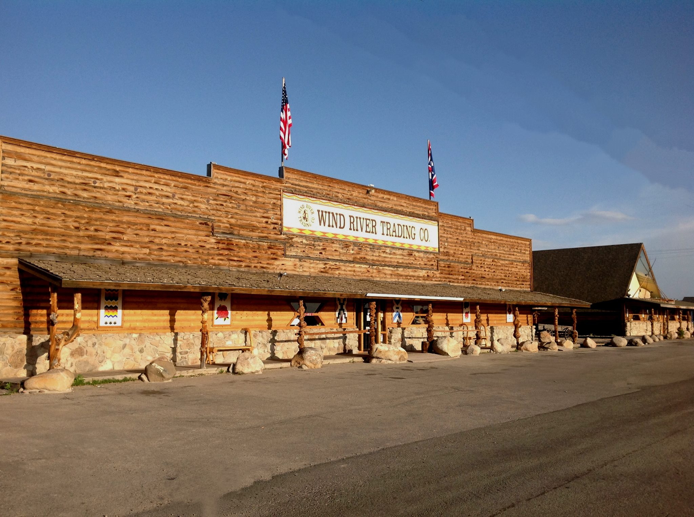
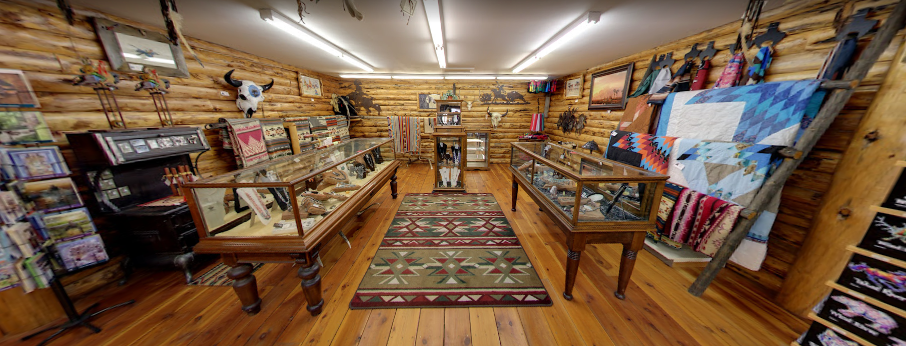

1946
Paul and Peg Hines buy the original store
The business began serving the Wind River Reservation in the post-war period after Paul Hines returned from naval service in the Pacific.

About the business
The business began here in 1946 when Paul and Peg Hines bought the original store. The present-day Wind River Trading Company grew out of the 1978 expansion that created the current trading company building.
1946
The business began serving the Wind River Reservation in the post-war period after Paul Hines returned from naval service in the Pacific.
1978
The big construction project in 1978 created the infrastructure still in use and opened the new store in September of that year.
2004
After years of working in the family business, Dave and Ben Hines became the operating generation for both the general store and trading company.
The Place Itself
The buildings matter, but the layout matters too. The storefront and the sales floor both still read like a real trading company, not a staged set.


What changed, and what stayed the same
What started as one rural store grew into Hines General Store and, just north of it, the Wind River Trading Company. The south-side complex became a familiar stop on the highway through Fort Washakie and has remained that way for generations.
The scale of the business matters, but the more visible legacy is the combination of grocery, trading company, local makers, and museum space at one site. It still feels like a working part of the community, not a staged attraction.

What the family built
This was never only a gift shop. The business grew out of a rural store that sold practical goods, supported local supply chains, and kept expanding to serve both community needs and visitors traveling the route.
Reservation business
The store has served the Wind River Reservation continuously since 1946, which is the central fact behind its staying power.
Trading company
The current gift-shop and museum side belongs to the construction work completed in 1978, not a recent branding exercise.
Still evolving
Interiors and displays have changed over time, but the history of the place still shows up in the buildings, the layout, and the family connection behind it.